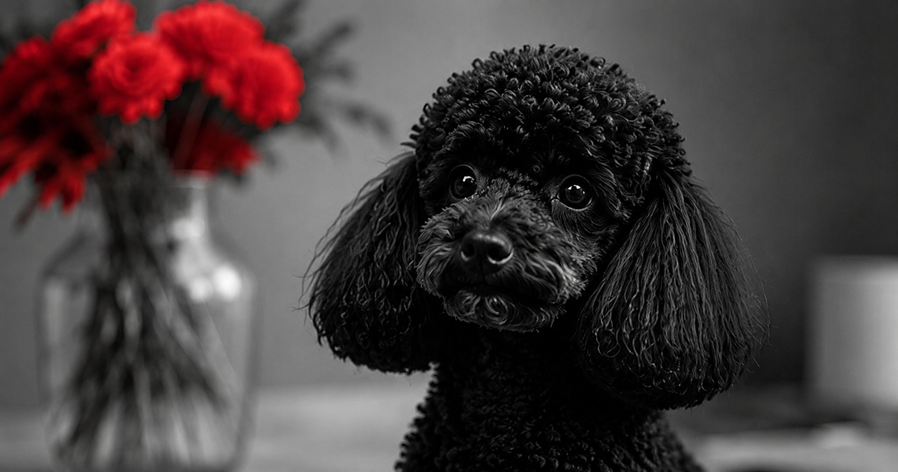
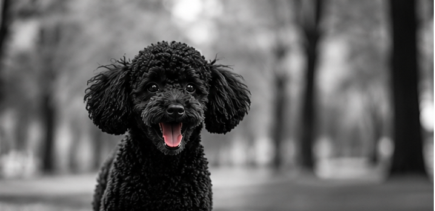
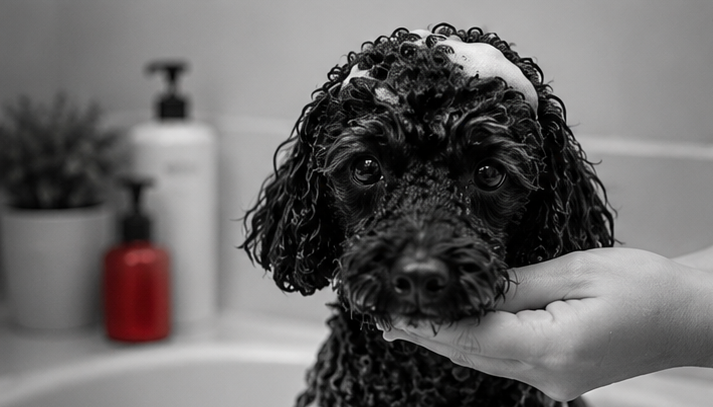
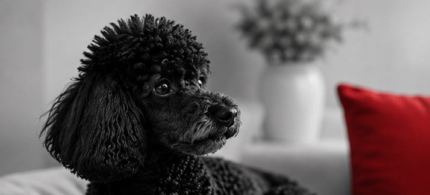
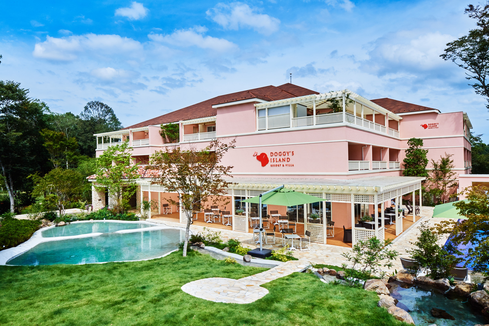
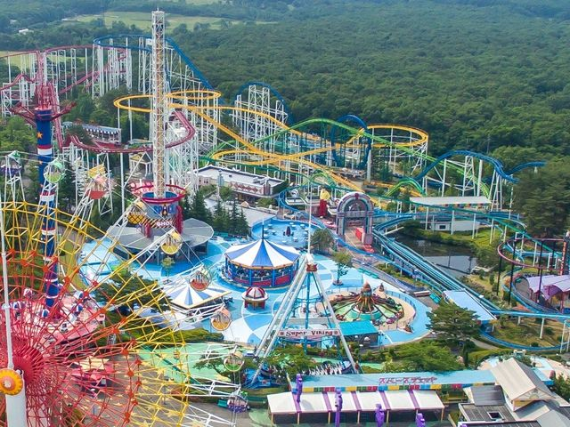
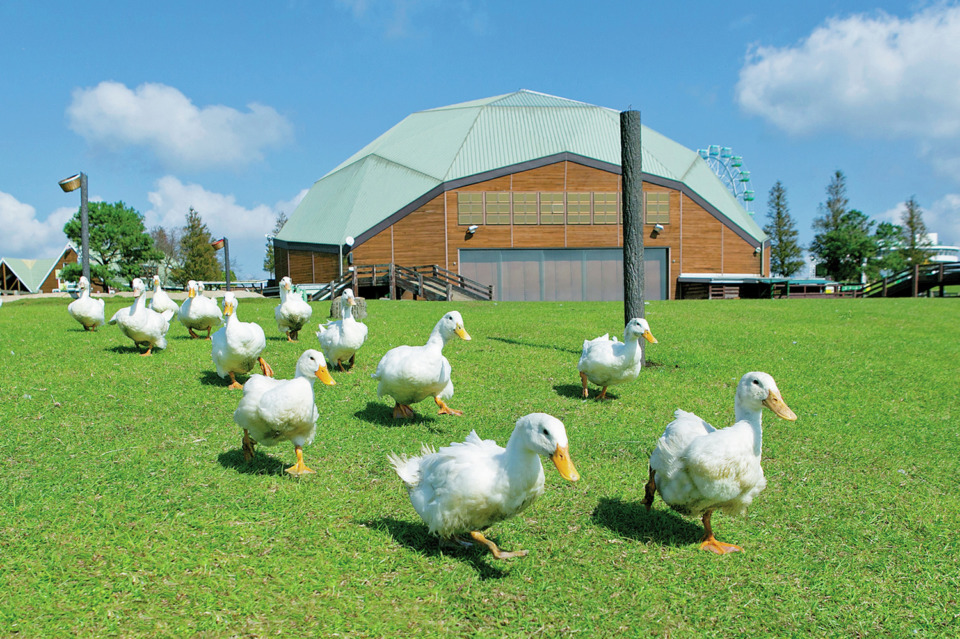

CUTE,SMART,AND ELEGANT
かわいさも、賢さも、気品も
Concept
Présentation
漆黒に輝く美しい毛並みと、優雅で洗練された佇まい。
黒プードルは、その上品な姿だけでなく、明るく愛情深い性格でも多くの人を魅了しています。
小さな仕草や豊かな表情、一頭一頭が持つ個性。
黒プードルならではの美しさと魅力を、さまざまな角度からお届けします。
About
魅力について

黒プードルの魅力
Charm

性格と暮らし
Parsonalit

被毛のお手入れ
Coat

健康と注意点
Health
Place
おすすめの場所
Lieu
黒プードルと一緒に楽しめる関東圏内のおすすめのお出かけスポットをご紹介します。
自然の中でのお散歩や、愛犬とゆったり過ごせる場所など、素敵な時間を過ごせるスポットを集めました。
画像をクリックすると、各スポットの公式サイトをご覧いただけます。
お出かけの計画や、愛犬との思い出づくりにぜひお役立てください。

小谷流の里 ドギーズアイランド
愛犬と一緒に楽しめる国内最大級のドッグリゾート
千葉県八街市

那須ハイランドパーク
愛犬と一緒に楽しめる自然豊かなテーマパーク
栃木県那須郡

マザー牧場
広大な自然の中で愛犬とのびのび過ごせる牧場
千葉県富津市
Gyarally
写真特集
Galerie Photo
私自身もプードルと暮らしており、毎日の中でたくさんの愛らしい表情や個性に触れています。 このページでは、我が家のプードルたちの何気ない日常や、お出かけ先で見せる楽しそうな姿、くつろいでいる様子などをご紹介します。 飼い主だからこそ見ることのできる瞬間を通して、プードルの魅力を感じていただけたら嬉しいです。
→愛犬の写真を見るFAQ
よくある質問
Questions Fréquentes
Q. 黒プードルの写真がうまく撮れません。コツはありますか？
A. 黒い毛並みは光の当たり方で表情が見えにくくなることがあります。自然光の入る明るい場所で撮影し、目にピントを合わせると可愛らしい表情を残しやすくなります。
また背景に白やベージュなどの明るい色を選んだりすると、黒プードルならではの表情や被毛の美しさを引き立てることができます。
Q. 黒プードルの毛並みを綺麗に保つ方法は？
A. 定期的なブラッシングやシャンプーを行うことで、艶やかで美しい被毛を保つことができます。毎日のケアで毛並みの変化を楽しむことも魅力のひとつです。
Q. 黒プードルとの散歩で気をつけることはありますか？
A. 暑い季節は黒い毛が熱を吸収しやすいため、涼しい時間帯を選び、水分補給をしながら楽しむことがおすすめです。
Q. 黒い毛色は色あせることがありますか？
A. 成長や生活環境によって毛色の印象が変化する場合があります。日々のケアによって美しい毛並みを保つことができます。
Feedback
アンケート
Votre Avis
黒プードルについて、皆様からのご意見やご感想を募集しております。
黒プードルの魅力や好きなポイントなど、ぜひお気軽にお聞かせください。
以下のフォームにご記入の上、送信してください。